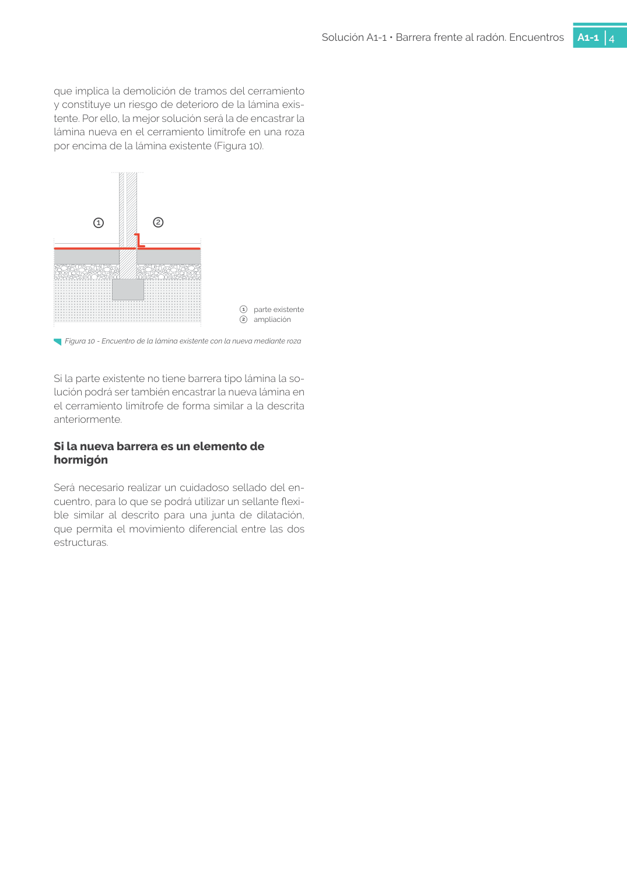

GUIA · Página 34 · versión sin-fecha
SHA256: e58e54b822cf4ab00e258f0eb50c0f06a8c04e3730a7f530d224485e2a5bb02e · página física 34 de 82 · métodos de encabezado
solo si están cotejados.
Formatos: Markdown · JSON de bloques · PDF p. 34 · imagen PNG
Página gráfica: el texto extraído puede ser parcial. Prevalece la imagen/PDF; depende de ellos.
Solución A1-1 • Barrera frente al radón. Encuentros A1-1 4 que implica la demolición de tramos del cerramiento y constituye un riesgo de deterioro de la lámina exis tente. Por ello, la mejor solución será la de encastrar la lámina nueva en el cerramiento limítrofe en una roza por encima de la lámina existente (Figura 10). 1 parte existente 2 ampliación 1 2 Si la parte existente no tiene barrera tipo lámina la so lución podrá ser también encastrar la nueva lámina en el cerramiento limítrofe de forma similar a la descrita anteriormente. Si la nueva barrera es un elemento de hormigón Será necesario realizar un cuidadoso sellado del en cuentro, para lo que se podrá utilizar un sellante flexi ble similar al descrito para una junta de dilatación, que permita el movimiento diferencial entre las dos estructuras. Figura 10 - Encuentro de la lámina existente con la nueva mediante roza
